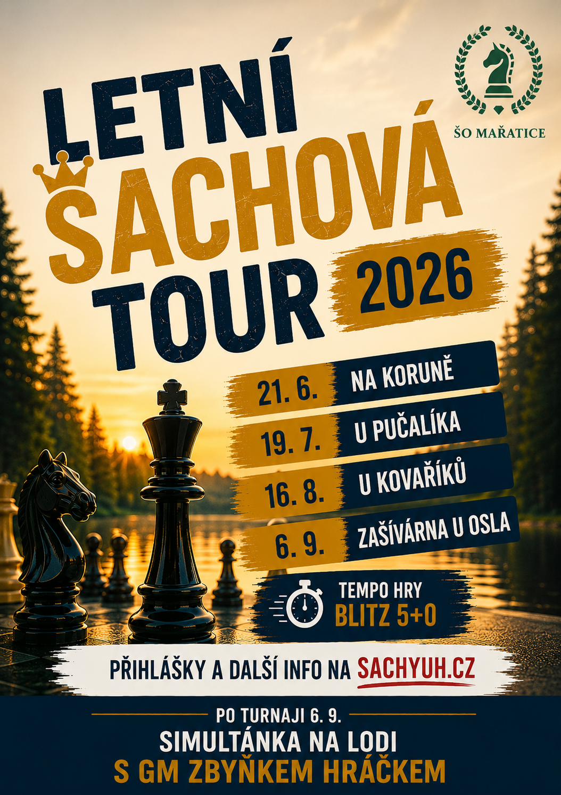
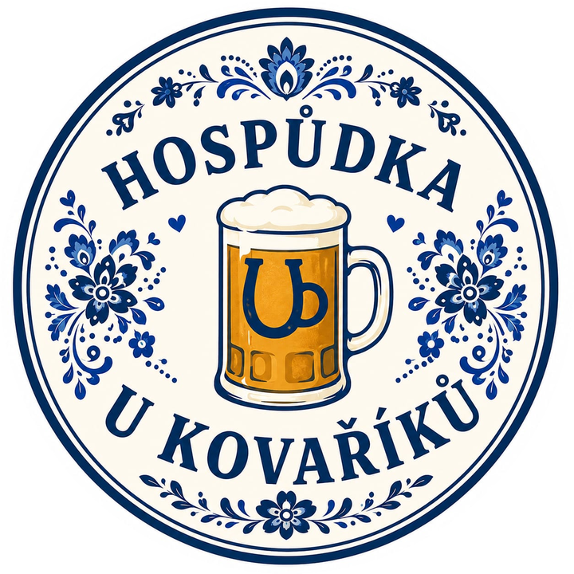
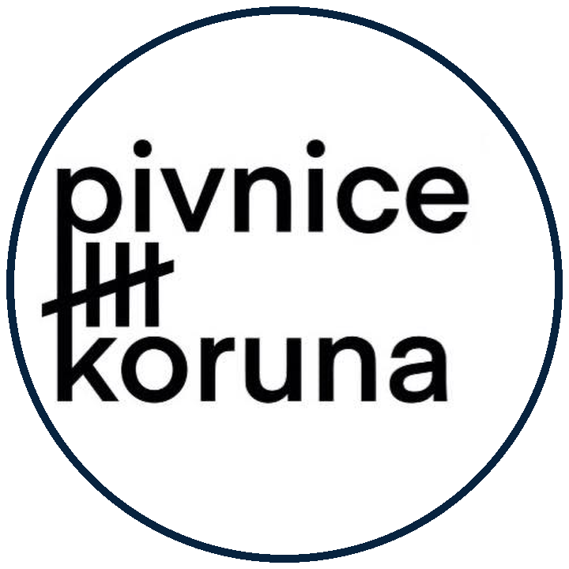

Série otevřených bleskových turnajů v letních měsících. Hrát se bude v několika podnicích v Uherském Hradišti a celá Tour vyvrcholí simultánkou s GM Zbyňkem Hráčkem.
Podrobnosti k Tour

Aktuálně
Série otevřených bleskových turnajů v letních měsících. Hrát se bude v několika podnicích v Uherském Hradišti a celá Tour vyvrcholí simultánkou s GM Zbyňkem Hráčkem.
Podrobnosti k Tour
Připravujeme

Bleskový turnaj v hospůdce U Kovaříků — 3. turnaj Letní šachové tour 2026.
Nezávazně přihlásit →Minulé akce

Bleskový turnaj U Pučalíka — 13 hráčů, 11 kol.
🥇 Petr Kapusta 🥈 Jan Králík 🥉 František Králík

Bleskový turnaj v Na Koruně (salonek) — 22 hráčů, 11 kol.
🥇 Petr Kapusta 🥈 Jaroslav Buráň 🥉 Jiří Vavřík
Bleskový turnaj v Pivnici Koruna — 16 hráčů, švýcarský systém.
🥇 Jarek Sháněl